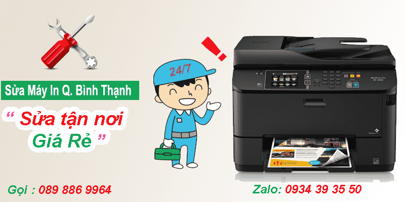
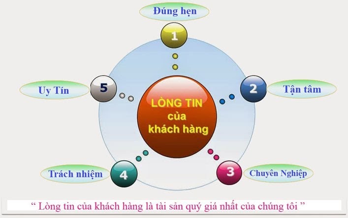

Sửa máy in quận Bình Thạnh
Tại quận bình thạnh có rất nhiều cơ sở, công ty chuyên sửa máy in - khắc phục sự cố máy in tại nhà và Tin Học hi-Tech cũng là đơn vị chuyên sửa máy in tại quận bình thạnh, Nhận sửa các lỗi máy in như kẹt giấy, máy in bị lem mực, máy in bị nhòe mực, in không ra chữ, máy in kêu to ... Khắc phục sửa chữa máy in tận nơi khách hàng. Địa chỉ sửa máy in của Hi-tech tại 15 Hoàng Hoa Thám, Phường 6, quận bình thạnh, Tel: 089 886 9964 - Zalo: 0934 393 550
Sửa Máy In Quận Bình Thạnh
Sửa máy in tại nhà quận Bình Thạnh
Sửa Máy in bị lỗi nguồn, không bật được máy in.
Sửa Máy in không nhận mực.
Sửa Máy in phun màu nháy đèn mà không in được.
Sửa Máy in quận bình thạnh bị kẹt giấy
Sửa Trang in bị nhăn
Sửa Máy in phát ra tiếng kêu lớn
Sửa Máy in laser không khởi động
Sửa Máy in phát ra tiếng kêu lớn
Sửa máy in Khi ra lệnh nhưng máy không in
Sửa Máy in không nhận cổng usb
Sửa Lỗi bộ tiếp mực làm tụt mực trong téc mực , thiếu mực lên đầu phun.
Sửa Bản In bị xọc, máy in in không đúng màu sắc,,bản in bị nhòe màu.
Sửa Máy in phun mầu hay bị lem mực, dính mực lên giấy in.
Sửa Máy in phun bị lỗi bộ Clean (Bộ hút mực, bơm mực ).
Sửa Máy in bị Lỗi khay đá giấy, không kéo giấy, máy in báo thiếu giấy trong khi in.
Sửa Máy in bị tràn bộ nhớ mực thải, Bộ cơ máy in bị sai, Máy in không khởi động được.
Chất lượng sửa máy in quận bình thạnh ?
Tại quận bình thạnh, công ty tin học Hi-Tech với phương châm nhanh - giá rẻ nhất, luôn mong muốn mang lại dịch vụ chất lượng nhất, làm hài lòng khách hàng - với đội ngũ kỹ thuật viên lành nghề, tử tế trong lĩnh vực sửa máy in tại nhà khách hàng.
Tin Học Hi-Tech luôn hạng chế tối đa vấn đề bị hư lại và phải bảo hành - anh hưởng đến công việc của quý khách hàng. vì vậy trong việc sửa máy in tận nơi quận bình thạnh. Luôn thay thế linh kiện chính hãng, tốt nhất để máy in được vận hành trơn chu.
Dịch vụ sửa máy in tận nơi giá rẻ của Hi-Tech có bảo hành uy tín với khách hàng, Sửa máy in tại nhà có xuất hóa đơn vat đầy đủ khi công ty, doanh nghiệp có nhu cầu. Ngoài ra tại quận bình thạnh Hi-Tech còn nhận làm công nợ cuối tháng với doanh nghiệp, công ty khách
Trong trường hợp máy in của quý khách hàng bị hư hỏng nặng liên quan đến vấn đề điện tử ... Hi-Tech có máy in thay thế tại thời để phục vụ nhu cầu in ấn của quý khách hàng trong thời gian sửa chữa
Công ty Tin Học Hi-tech có đội ngũ kỹ thuật viên năng động, nhiệt tình - Nhận sửa chữa máy in tận nơi tất cả các ngày trong tuần, kể cả thứ 7, chủ nhật. Khi quý khách hàng cần sửa máy in buổi tối ở tại quận bình thạnh, có thể liên hệ với Hi-Tech trước 5h, Kỹ thuật viên sẻ túc trực tại nơi khách hàng
Cần sửa máy in nhanh ở quận bình thạnh vui lòng liên hệ số điện thoại: 089 886 9964 hoặc nhắn tin zalo : 0934 393 550. kỹ thuật viên sẻ đến ngay, khắc phục sự cố nhanh nhất.

► Sửa máy in tận nơi quận bình thạnh giá rẻ
- Công ty sửa máy in tại nhà quận bình thạnh 24/7
- Sửa máy in tận nơi giá rẻ quận bình thạnh
- Sửa máy in quận bình thạnh có xuất hóa đơn VAT
- Hỗ trợ công nợ với công ty doanh nghiệp cuối tháng
- Dịch vụ sửa máy in giá rẻ có xuất hóa đơn VAT theo yêu cầu
- Tư vấn sửa máy in miễn phí, Hỗ trợ cài đặt driver qua teamvewer
- Nạp mực máy in quận bình thạnh
Với đội ngũ kỹ thuật viên đông đảo, luôn túc trực tại các quận Tp.Hcm, Vì vậy khi quý khách hàng có nhu cầu cần sửa máy in nhanh tại quận bình thạnh. Kỹ thuật viên sửa máy in sẻ đến nhanh nhất chỉ 20'
Khi Quý khách hàng cần sửa máy in tại quận bình thạnh. vui lòng gọi số 089 886 9964. Hoặc nhắn tin ZALO 0934 393 550
► Các lỗi máy in thường gặp
- Sửa máy in lỗi không in được, không kết nối với máy in
- Sửa lỗi nguồn máy in, Board formater ..
- Sửa hộp mực máy in như: Hộp mực bị lem, bị chấm đen, bị sọc,
- Sửa máy in bị nhòe mực không ra chữ...
- Sửa máy in bị kẹt giấy, rách giấy, không nhận hộp mực
- lỗi máy in báo đèn đỏ, máy in không in được ...
- Reset máy in hp, Samsung, Brother, Epson ...
- Thay bao lụa, Trục ép, Lô Xoáy, đèn Scan ...
- Thay thế linh kiện chính hãng, Bảo hành Uy Tín
- Ngoài ra chúng tôi còn nhận Bảo Trì, Bơm mực máy in theo Tháng/Quý/Năm

Công ty tin học hi-tech nhận sửa máy in giá rẻ quận bình thạnh
Các dịch vụ sửa máy in tận nơi quận bình thạnh
- Công ty Sửa máy in bị kẹt giấy ở quận Bình thạnh
- Công ty Sửa máy in báo lỗi đèn đỏ, không in được tại quận Bình Thạnh
- Sửa máy in không láy giấy lên được tại quận Bình Thạnh
- Sửa máy in tại nhà quận bình thạnh bị hư không in được
- Sửa máy in tại nhà không lên nguồn ở quận Bình Thạnh
- Sửa máy in tận nơi bị lem, nhòe mực ở quận Bình Thạnh
- Sửa máy in không nhận mực in ở quận Bình Thạnh
- Sua may in quan binh thanh nhanh & Rẻ nhất
Sửa chữa các lỗi máy in như
Sửa máy in quận bình thạnh không khởi động được.
Sửa lỗi máy in ra lệnh in nhưng máy in không in được
Sửa chữa máy in bị phát ra tiếng kêu quá lớn khiến bạn cảm thấy khó chịu.
Sửa lỗi máy in cuốn giấy bị nhăn, rách, hay kẹt giấy.
Sửa tình trạng máy in khi in kéo nhiều tờ giấy.
Sửa lỗi máy in khi ra lệnh in máy chạy nhưng không cuốn giấy.
Sửa lỗi máy in không nhận cartridge (hộp mực).
Sửa lỗi máy in ra bản in lem nhem, mực mờ, bị sọc, bị đen …
Sửa chữa máy in không gửi và nhận fax không được
Sửa lỗi máy in không vô nguồn ( không có điện)
Sửa tình trạng máy in không có tín hiệu fax
Sửa lỗi máy in thường xuyên kẹt giấy.
Sửa máy in in được 1 tờ rồi ngưng không in nữa, tắt máy mở lại in tiếp 1 tờ rồi ngưng.
Xem thêm chi nhánh: sửa máy in ở quận tân bình
Các đường tin học Hi-Tech sửa máy in bình thạnh giá rẻ
Các tuyến đường mà Công ty Hi-tech sửa chữa Máy In Tại Nhà Bình Thạnh Chuyên Nghiệp:
Đường Trần Bình Trọng, Đường Trần Kế Xương, Đường Trần Trọng Kim, Đường Trần Văn Kỷ, Đường Trường Sa, Đường Hoa Lan, Đường Hoa Sữa, Đường Phú Mỹ, Đường Quốc Lộ 13, Đường Nguyễn Thiện Thuật, Đường Nguyễn Thượng Hiền, Đường Ung Văn Khiêm, Đường Chu Văn An, Đường Cô Bắc, Đường Cô Giang, Đường Diên Hồng, Đường Vũ Ngọc Phan, Đường Vũ Tùng, Đường Xô Viết Nghệ Tĩnh, Đường Yên Đổ, Đường Nguyễn Lâm, Đường Nguyễn Ngọc Phương, sửa máy in bình thạnh Đường Nguyễn Thái Học, Đường Nguyễn Huy Lượng, Đường Nguyễn Văn Đậu, Đường Nguyễn Văn Lạc, Đường Nguyễn Xí, Đường Nguyễn Xuân Ôn, Đường Đinh Bộ Lĩnh, Đường Phan Huy Ơn, Đường Phan Văn Hân, Đường Ba Mươi Tháng Tư, Đường Bạch Đằng, Đường Phan Văn Trị, Đường Phó Đức Chính, Đường Vạn Kiếp, Đường Võ Duy Ninh, cửa hàng sửa máy in giá rẻ bình thạnh Đường Võ Trường Toản, Đường Vũ Huy Tấn, Đường Đặng Thai Mai, Đường Nguyễn Hữu Cảnh, Đường Nguyễn Khuyến, Đường Ngô Đức Kế, Đường Ngô Nhân Tịnh, Đường Ngô Tất Tố, Đường Nguyễn An Ninh, Đường Nguyễn Huy Tưởng, Đường Nơ Trang Long, Đường Phạm Viết Chánh, Đường Phạm Văn Đồng, Đường Phan Đình Phùng, Đường Hoàng Hoa Thám, Đường Huỳnh Đình Hai, Đường Nguyễn Cửu Vân, Đường Thanh Đa, Đường Hoa Thị, Đường Hoa Trà, Đường Đinh Tiên Hoàng, Đường Mê Linh, Đường Miếu Nổi, Đường Bình Lợi, Đường Bình Quới, Đường Bùi Hữu Nghĩa, Đường Bùi Đình Túy, Đường Châu Văn Tiếp, Đường Phan Huy Ích, sửa máy in quận bình thạnh Đường Điện Biên Phủ, Đường Đống Đa, Đường Hoa Giấy, Đường Huỳnh Mẫn Đạt, Đường Huỳnh Tịnh Của, Đường Lam Sơn, Đường Lê Quang Định, Đường Lương Ngọc Quyến, Đường Mai Xuân Thưởng, Đường Hoa Lài
Danh sách tên phường nhận sửa máy in quan binh thanh chuyên nghiệp
Phường 1, Phường 3, Phường 5, Phường 25, Phường 15, Phường 17, Phường 26, Phường 11, Phường 12, Phường 13, Phường 14, Phường 21, Phường 22, Phường 27, Phường 2, Phường 24, Phường 19, Phường 6, Phường 7, Phường 28, Đổ Mực In Tận Nhà Bình Thạnh.